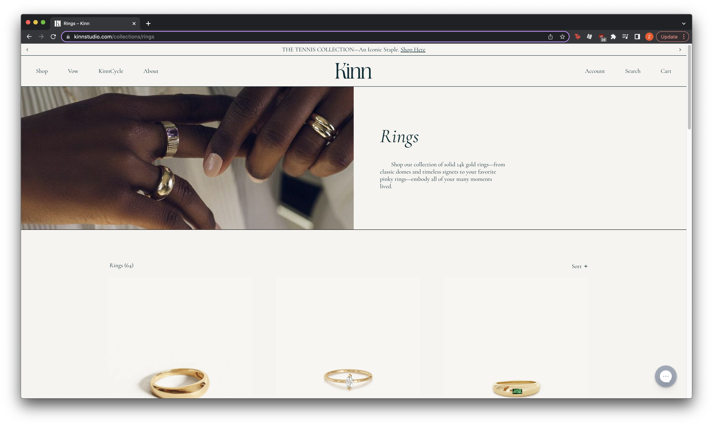
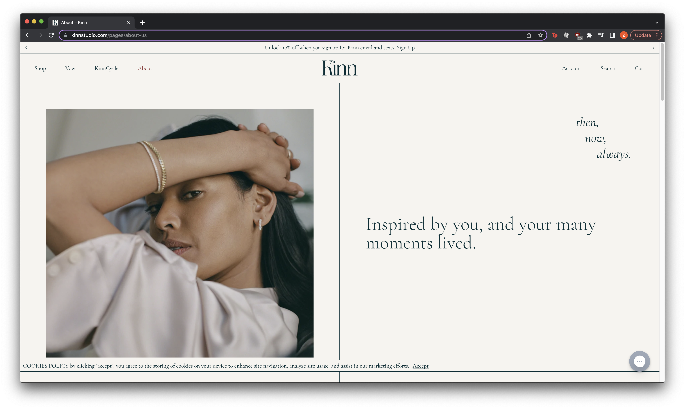
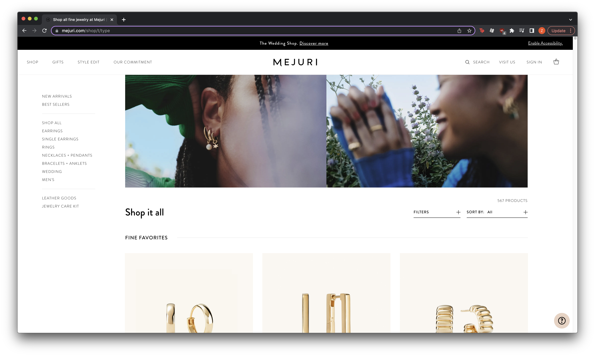
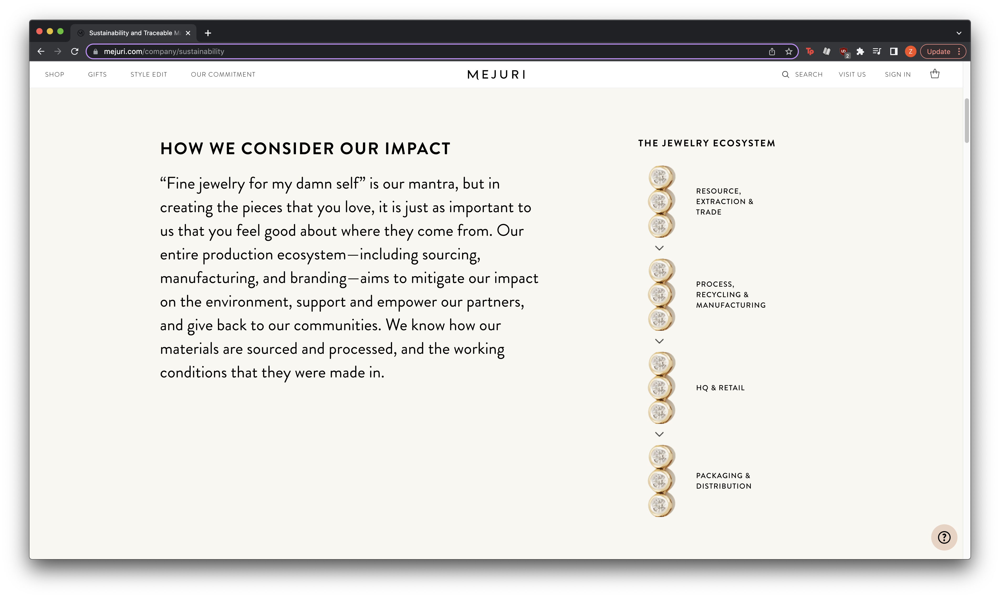
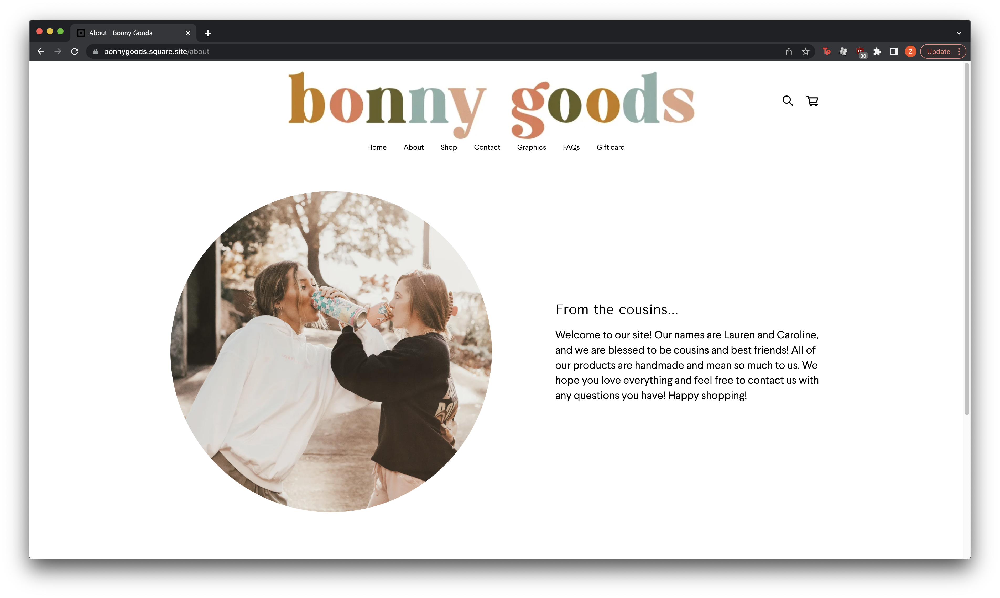
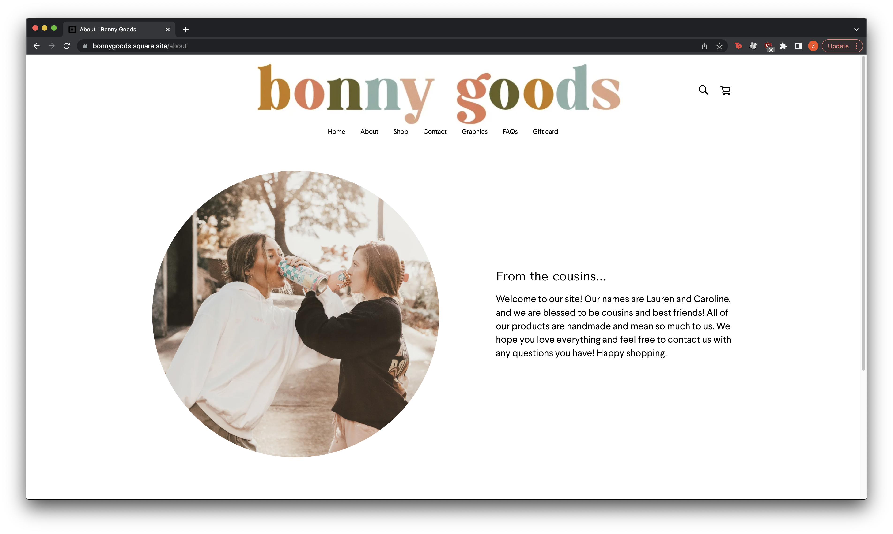

Final project proposal
Introduction
Koloktos
Koloktos is a local jewelry business that specializes in hand-made vintage-style jewelry, including earrings, necklaces, bracelets, and rings, sourced from recycled metals.
Target audience
The target audience is people who are interested in finding unique vintage-style jewelry that is ethically sourced to express themselves.
Their primary goals for visiting the site are to find good prices and learn about where the metals are sourced from, as well as what kinds of jewelry options are available.
Comparative analysis
Kinn
 Mejuri
 Bonny Goods
 

Website content
Home
Enjoy hand-crafted vintage pieces with beautiful designs. Koloktos creates jewelry for anyone who seeks to express themselves using classic, thoughtful pieces made from sustainable materials.
[Headshot of a model with their hands on their face showcasing rings, earrings and a necklace that the person is wearing.]
About
We are a group of jewelry-loving individuals who wanted to create a small business that sells individualized vintage-style jewelry, which is all ethically sourced at a fair price. Koloktos' mission is to provide anyone and everyone with access to pieces that help express themselves in a unique way.
[Photo of multiple models' hands accessorized with rings and bracelets in one frame]
Koloktos prides itself in using only recyclable materials for its pieces. All the jewelry on our site have been created from existing jewelry, and we make sure our suppliers and workers are fairly compensated.
[Graphic listing the steps of jewelry-making: resource/trade, recycle, manufacture, retail, distribution]
Jewelry
-
Gold Heart Locket
Made with recycled gold, 20" chain, can open and add photo inside.
$30.00
-
Opal Pendant
Made with recycled opal, 15" recycled metal chain.
$28.00
-
Gold Small Hoops
Small yet bold everyday hoop earrings made with recycled gold.
$20.00
-
Bar Stud Earrings
Small gold bar with slip in backing, made with recyled gold.
$20.00
-
Emerald Ring
Gold band with emerald stone, made with recycled metals.
$20.00
-
Cigar Band
Thick silver cigar band made with recycled metals.
$20.00
-
Pearl Ring
Ring of small pearls with silver bead in middle, made with recycled metals.
$18.00
-
Link Chain Bracelet (Gold)
Thin gold chain bracelet with clasp, made with recycled gold.
$25.00
-
Link Chain Bracelet (Silver)
Thin silver chain bracelet with clasp, made with recycled silver.
$25.00
[Photo of model wearing Gold Heart Locket]
[Photo of model wearing Cigar Bandt]
Location
We are located in San Francisco, CA, in the Financial District.
Address: 2 S Park St, San Francisco, CA 94107
[Photo of shop in San Francisco]